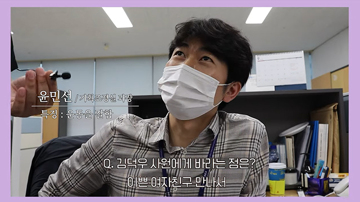

홍보영상
- 홈
- 소식/홍보
- 홍보영상
한국어촌어항공단의 핵인싸!! 경영기획본부 신규직원 브이로그 #04 새
글
- 작성일 : 2022.07.06
- 조회수 : 1,852

#한국어촌어항공단 #신입직원브이로그
#직장인브이로그#출장브이로그
#공공기관브이로그 #경영기획본부
#신규직원브이로그 #공기업 #공공기관
*모든 영상은 코로나19 방역수칙에 준수하여 촬영하였습니다.*
한국어촌어항공단 신규 및 90년대생 직원 V-log 네번째 주인공! 한국어촌어항공단 경영기획본부 김덕우 사원님입니다!
재밌고 이쁘게 영상 봐주시고, 많은 관심 부탁드립니다!
*모든 영상은 코로나19 방역수칙에 준수하여 촬영하였습니다.*
한국어촌어항공단 신규 및 90년대생 직원 V-log 네번째 주인공! 한국어촌어항공단 경영기획본부 김덕우 사원님입니다!
재밌고 이쁘게 영상 봐주시고, 많은 관심 부탁드립니다!